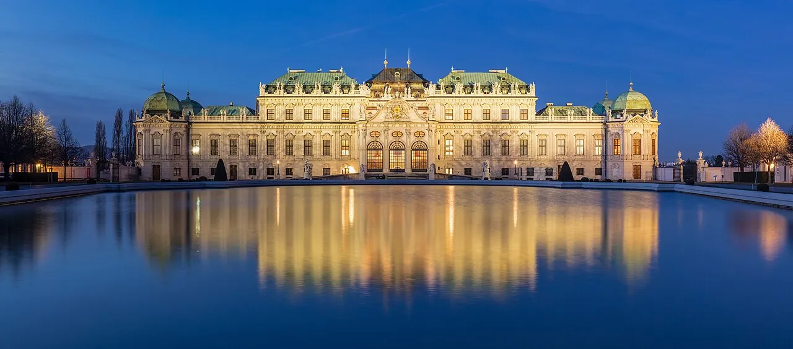
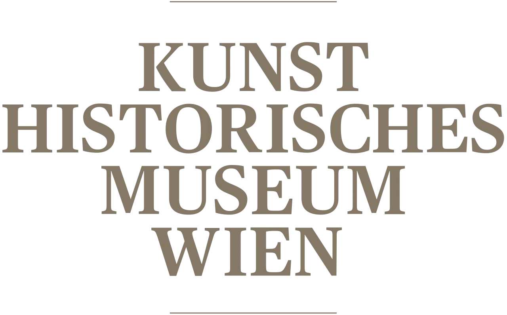
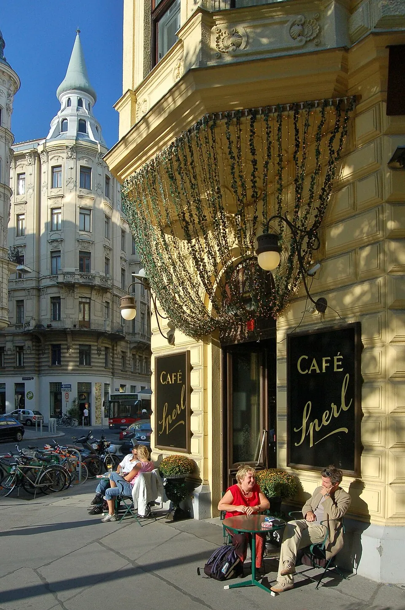
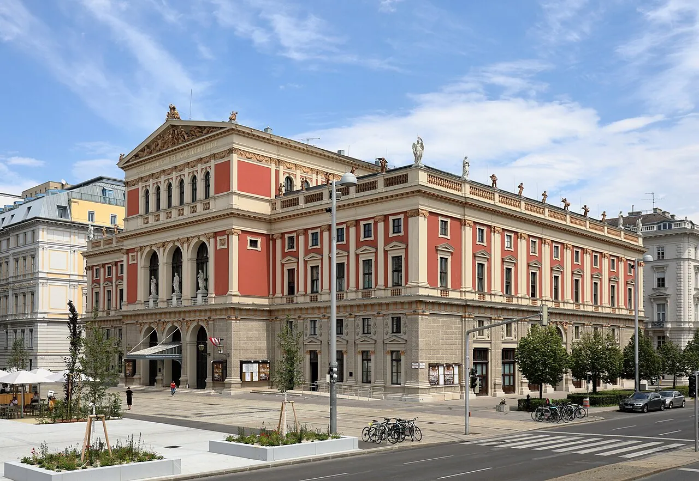
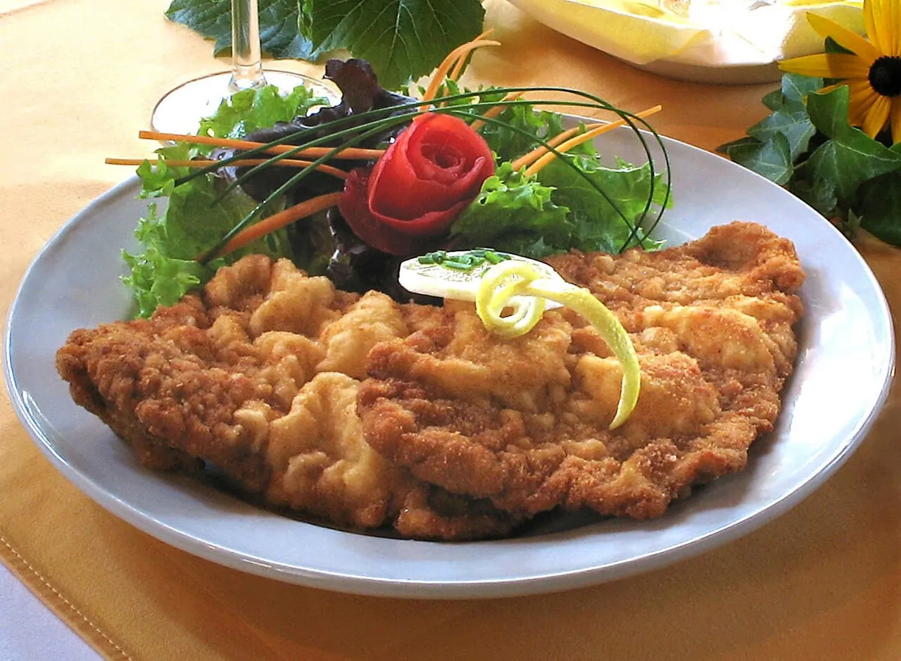
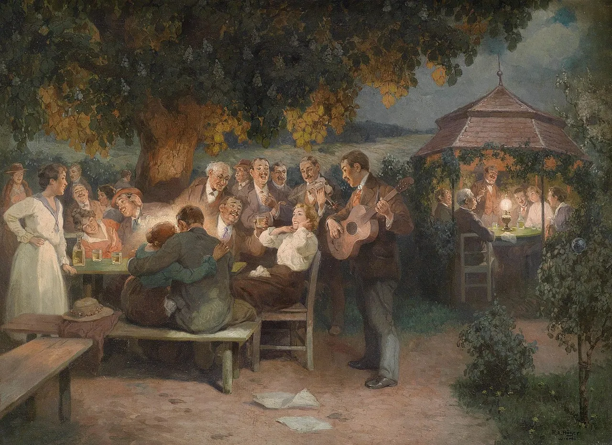
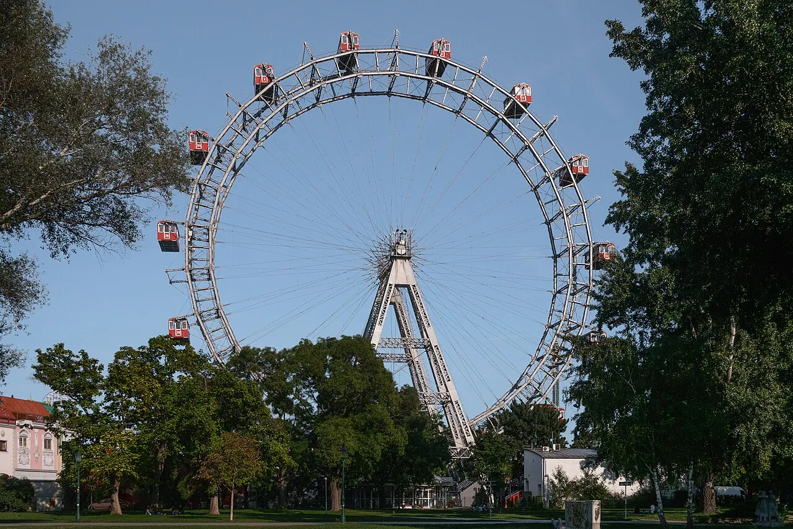

postkarte · carte postale · cartolina postale
€2.40
⚜
Republik
Österreich
Greetings from
Wientwo days, around a Michelin reservation
c/o the reader
"the other 47 hours"
101 cited · 18 min
· Telegramm ·
W
Wien → Reisende
TWO DAYS
— STOP —
ANCHORED ON THE MICHELIN RESERVATION
— STOP —
DAY ONE INSIDE THE RING
— STOP —
STEPHANSDOM AT NINE, HOFBURG & SISI ON FOOT, LONG MELANGE AT
SPERL
OR
BRÄUNERHOF
— STOP —
DAY TWO OUTSIDE THE RING
— STOP —
SCHÖNBRUNN GRAND TOUR AT OPENING, THEN TRAM D TO
UPPER BELVEDERE
FOR THE KISS
— STOP —
ONE MUSEUM SLOT GOES TO
KUNSTHISTORISCHES
ON THURSDAY LATE OPENING
— STOP —
OPERA EVENING: €13–€18 STEHPLATZ AT THE
STAATSOPER
OR FREE LED BROADCAST ON KARAJAN-PLATZ
— STOP —
REFUSE EVERY POWDERED-WIG MOZART TICKET ON STEPHANSPLATZ
— STOP —
CAFÉ CENTRAL CLOSED UNTIL AUTUMN
— STOP —
WEATHER: WET
— STOP —
BRING UMBRELLA
— END —
— Wien.per drahtkabel · 28. mai 2026
The Imperial Four
Inside the Ring on foot. Outside the Ring by tram. Two well-shaped days, no double-booking required.

XIII · Hietzing
Day II · Morning
Habsburg summer palace, 40 rooms, ~75 min. The
Grand Tour
is the consensus pick over the €28 Imperial — same rooms up to the Great Gallery, but only the Grand continues into the significant private apartments [8].
Timed slot mandatory [1].
Slots fill hours ahead — arrive at opening. If sold out: the Baroque gardens &
Gloriette walk are free year-round
[11].
Booked

III · Landstraße
Day II · Afternoon · Tram D
Klimt's The Kiss
lives at the Upper Belvedere, 1st floor, Gallery 10, centerpiece of the world's largest single Klimt collection — 24 paintings [31].
Lower Belvedere holds rotating temporaries; the combined "2 in 1" at €32 is skippable on a tight weekend.
Timed slots both buildings [3].
Don't queue downstairs for The Kiss. It's at the Upper.
The Kiss

I · Innere Stadt
Day I · 09:00
Nave entry free; South Tower
is 343 unlifted steps (€6) for the best view; North Tower has the lift to the Pummerin bell and the famous tiled roof (€5);
catacombs
are €8 for the Ducal Chamber with Rudolf IV's tomb and urns holding Habsburg organs [6].
€29 all-access
Pick the South Tower or the catacombs. Not both.
Tower
Day I · Late morning
Sisi Museum + Imperial Apartments, audio guide in 13 languages, ~60–90 min [2].
Walk-in works. The Silver Collection has been closed since 1 April 2023 — drop it from any older guide.
Want Lipizzaners cheap? The
Spanish Riding School Morning Exercise
is the weekday-morning drop-in [10].
Ten minutes' walk from Stephansdom. String them together.
Sisi
If You Have One Museum Slot
Nothing else competes with the world's largest Bruegel concentration, Vermeer's The Art of Painting, and Cellini's gold Saliera. Go Thursday — the Bruegel room finally empties when the museum stays open to 21:00.

I · Maria-Theresien-Pl.
Tue-Sun 10-18 · Thu to 21
World's largest Bruegel concentration. Vermeer's Art of Painting on permanent display, owned by the Austrian Republic [13].
The Kunstkammer
shows ~2,200 Habsburg objects anchored by Cellini's gold Saliera salt cellar [14].
Go Thursday after seven. The Bruegel room finally empties
[15].
Default
The Five Other Museums
If KHM isn't your one slot
| Albertina · Dürer + Monet→Picasso · daily 10–18, Wed/Fri to 21 [16] | €19.90 |
| Leopold Museum · Schiele + Klimt Death and Life · Wed-Sun, Thu to 21 [18] | €19 |
| MAK · 9 Stoclet Frieze cartoons · Tue 10–21, closed Mon [24] | €15.50 |
| Weltmuseum · Penacho + Cook voyages (3-4 h) | €16 |
| Wien Museum · permanent free, Karlsplatz [30] | Free |
| One pass | Pick one |
Leopold > everything else in the MuseumsQuartier. Skip Freud unless you love empty rooms.
The MQ Libelle rooftop on top of the Leopold is free Mar–Oct — Vienna view with no admission.
A Real Coffee House
UNESCO inscribed: "time and space are consumed, but only the coffee is on the bill" [32]. A single Melange buys hours at the table. Order by name, never just a coffee.

VI · Gumpendorfer Str.
1880. Klimt & the Vienna Secession ate here [43]. Vienna Tourism's #1 traditional house.
✓ default pick
☕ BRÄUNERHOF
I · Stallburggasse
Thomas Bernhard's salon. Vienna's best newspaper rack. Locals on weekdays.
✓ quiet, well-dressed
☕ HAWELKA
I · Dorotheergasse
Bohemian, lived-in. Signature Buchteln. Smoke-darkened walls.
✓ authentic
Lively, card-game crowd, LGBTQ-welcoming. Local energy.
✓ local energy
☕ LANDTMANN
I · Universitätsring
Best Kaiserschmarrn in town [70]. Smart but pricey; tourist-heavy.
⚠ tolerable for the dessert
Imperial confectioner. Sachertorte rival — the rivalry is real [40].
⚠ tourist-clogged but the cake
☕ SACHER
I · Philharmonikerstr.
The Original Sacher-Torte trademark, won in 1963 court ruling. Two sponge layers, not one.
⚠ trap, but: the cake
☕ CENTRAL
I · Herrengasse
Central
Closed 16 Mar 2026 for renovation [34]. Tourist trap even when open [36].
✗ skip — closed til autumn
Order a Melange (espresso + steamed milk) or an Einspänner (black under whipped-cream dome, in a glass) — never just a coffee [38].
The Stehplatz Move
The 2025/26 Staatsoper season runs to 30 June 2026 — your late-May weekend is firmly in season. The visitor move is standing-room: €13–€18, surtitle screen at each spot, line down the Operngasse side.

I · Opernring
25/26 · ends 30 Jun
Standing-room Stehplatz €18 Parterre / €15 Galerie / €13 Balkon — each spot gets its own surtitle monitor [45].
Buy online from 10:00 the day of (max 2/transaction) [46],
or in person at the dedicated Stehplatz-Kasse on the Operngasse side, opens 80 min before curtain.
€13 night

I · Karlsplatz
Free at 10am · Karajan-Platz
Goldener Saal seats 1,744 with 300 standing places — home of the Vienna Philharmonic [50].
Subscriptions have a ~13-year waiting list [51]; chase returned tickets, the
Konzerthaus (~750 events/season),
or the annual free Schönbrunn open-air gala.
Volksoper at Währingerstraße 78 is Vienna's only operetta house.
Sold out at the Staatsoper or shoes hurting?
Oper live am Platz — 50 m² LED, 180 chairs, free.
Free
RETURN
TO
SENDER
The Powdered-Wig Mozart Concert
Costumed sellers in wigs and red frock coats work Stephansplatz, Graben, Kärntner Strasse, Opernring and the Hofburg, hawking €55–€85 tickets to commission-rigged student-ensemble concerts in much smaller venues than the brochure shows [54].
Tourist complaints confirm the pattern — promised "Mozart & Strauss with ballet and orchestra in Palais Palffy" turns out to be a dilapidated venue with no room for either [55].
Want a legitimate Strauss/Mozart greatest-hits night? Buy direct from the
Wiener Hofburg Orchester
— Hofburg Zeremoniensaal + Konzerthaus Mozart-Saal, Tue/Thu/Sat May–mid-October [56].
Never on the street.
Eating · Five Other Meals
Around the Michelin Anchor
Your Michelin dinner is one slot. The weekend needs five other meals.

IV/VI · Linke Wienzeile
Saturday flea: 6:30–14:00
~130 stalls, food vendors to 23:00. The Saturday flea-market 6:30–14:00 is worth timing the weekend around [57].
Locals shop the southern Linke Wienzeile side — less touristy, better value [58].
Standouts: Urbanek (cheese, glass of wine at the counter), Umar (fish), Neni (Israeli-Oriental), Tewa (organic plates).
Urbanek counter, single glass of wine, hours of conversation.

I · Wollzeile
Beisl · since 1905
Claims to have invented the Wiener Schnitzel in 1905. The plate is 30 cm and the cutlet overhangs it — ~250 g pounded veal [63].
Two branches: Wollzeile original, Bäckerstraße sister.
For Tafelspitz instead: Plachutta Wollzeile serves the boiled-beef cut in a copper pot with marrow bone, root vegetables and the apple-horseradish/chive sauces [64].
Order one schnitzel between two. The plate is bigger than the table.
UNESCO intangible · 2024
Bitzinger at Albertinaplatz since 1999 — daily 08–04, the original Käsekrainer is the house signature [59].
Würstelstand LEO on Döblinger Gürtel, founded 1928 — Vienna's oldest, outside the tourist zone [61].
Zum Scharfen René: chili-loaded, closed weekends [62].
Stand. Eat with a beer in the other hand. That's the form.
Sacher v. Demel · 130 years
Franz Sacher invented it in 1832 at age 16, for Prince Metternich [41].
His grandson sold rights to Demel during a money crunch; the lawsuit dragged on until 1963.
Hotel Sacher kept "Original Sacher-Torte" with two sponge layers; Demel kept its single-layer recipe as "Demel's Sachertorte" [40].
Try one. Or both. The queue is part of the deal.

XIX · Nussdorf
Tram D from the Ring
Heuriger (current-vintage wine tavern). The house was Beethoven's; the business has poured wine on this spot since 1683 [66].
Skip Grinzing (tour-bus territory). Nussdorf is restaurant-grade; cross the Danube to Stammersdorf for the most tourist-free pours [67].
Order Gemischter Satz — Vienna's signature field-blend DAC.
Sturm (partial-fermentation must) — only Sept-Oct. Not this trip.

II · Praterstern
Wheel + Würstel evening
65 m, 1897, world's oldest surviving Ferris wheel of its type, daily 09:00–23:45 [85].
Two Praters: the funfair around the wheel, and the Green Prater — ~6 km², nearly twice the size of Central Park.
Locals walk the 4.5 km Hauptallee; tram 1 from Schwedenplatz [89].
Skip the €507 cabin-dinner upsell — it competes with the Michelin slot, not complements it.
Spin the wheel. Bitzinger at the foot of it. Schweizerhaus beer. Two hours, all in.
Day I · Inside the Ring
Stephansdom → Hofburg → coffee house → Kunsthistorisches → opera
- 09:00 Stephansdom nave (free). Pick the South Tower or the catacombs, not both [6].
- 10:30 10-minute walk to the Hofburg. Sisi Museum + Imperial Apartments, audio guide, 60–90 min.
- 13:00 Long Melange and Kaiserschmarrn at Café Sperl or Bräunerhof.
- 15:00 Afternoon at the Kunsthistorisches — open until 21:00 on Thursday [12].
- 19:00 Free Oper live am Platz on Karajan-Platz, or your Michelin reservation.
Day II · Outside the Ring
Schönbrunn → Würstel → Belvedere → Heuriger
Bonus · Saturday morning
If a third day appears
Tickets & Trains
Skip the €99/24h Vienna Pass — only breaks even at a punishing five-sight pace. The City Card 72h at €29 wins for actual weekenders.
Airport → City
VIE → Wien Mitte
| S7 · 20–22 min · €2.20 + €3.20 [72] | €5.40 |
| CAT · 16 min nonstop [73] | €14.90 |
| Six minutes saved, triple the price | Take the S7 |
Transit Pass
For 72 hours on the ground
Late May / Early June 2026 — what's actually on
your weekend lands here
Other Postcards In This Album
From the same Vienna weekend
— write again from Wien.
· postkartenbote · 28 mai 2026 ·